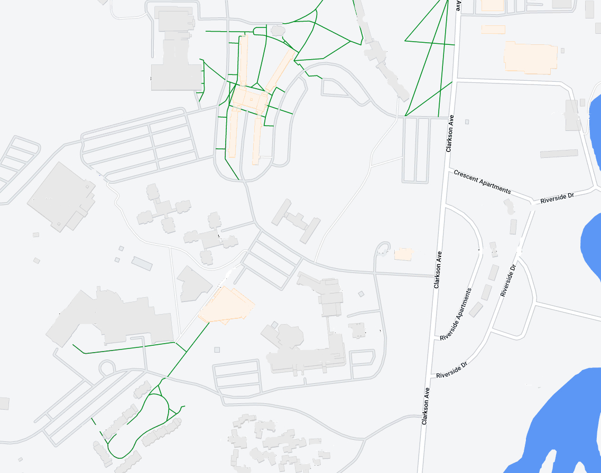

Bertrand H. Snell Hall
Bertrand H. Snell Hall is home to the David D.Reh School of Business,
the Department of Communication, Media, and Design, the Department of Humanities and Social Studies,
and our Engineering and Management program.
This building also contains collaborative learning environments including a design lab, computer lab, an art studio,
and a teaching lab.

Science Center
The Cora and Bayard Clarkson Science Center houses many
departments including biology, biomolecular science, chemistry, computer science, data science,
mathematics, physics, and psycology. The President's Office is also located in the Science Center
in room 321 and can be contacted at president@clarkson.edu or (315)268-6444.
Concrete Cafe, a grab and go dining location, can be found on the third floor.
ERC
The Andrew S. Schuler Educational Resource Center is a very
popular study spot on campus which also contians many services for students. This student hub contains
the Library, Career Center, International Center, Student Success Center, Diversity & Inclusion Offices,
the Student Health and Counseling Center, and Campus Saftey and Security.
The ERC also is home to the Dorf Makerspace which allows students to have access to 3D printers, 3D Scanners,
handheld CNC capabilities, and a space for student collaboration and innovation.
Student Center
The Student Center is was a student hub that is the center of campus activity.
It also includes two dining optons for students to enjoy. The Marketplaec Deli has made to order sandwhiches and wraps as well as
breakfast sandwhiches for grab and go options. The Servery offers many customizable dishes and a rotating menu.
The Student Center also houses the CUSA (student governemnt) Office, a radio station, tv station, the mail room, and CUB (our student union board).
CAMP
The Center for Advanced Materials Processing is home to Clarkson's
Wallace H. Coulter School of Engineering which contains all of our enginnering programs.
CAMP also is a research center in material proccesing, synthesis, functionalization, and characterization.
In additon, Clarkson's 12 SPEED teams are also housed here, giving student the opportunity to work in collaborative
project teams and compete with them.
Rowley Labs
Rowly Labs is connected to CAMP and houses many computer and research labs. Many professors offices in the enginnering department can be found in Rowley.
Cheel Arena
Cheel Campus Center is the current home ice for Clarkson men's and women's Division 1 hockey teams, where students can get free admission to games.
Cheel also contanains Yianoukos Fitness Center which is a newly rennovated fitness center including a climbing wall.
There is also a grab and go dining option available at the Disefano's Family Cafe housed in Cheel.
Quad
The Quad is made up of the residence halls Cubley, Reynolds, Ross, and Brooks which each has four floors.
This dorming option is mainly for first year students and each room houses two students and about 24-50 students per floor.
The center of the quad also houses the Ross-Brooks Cafe, also called RoBro, a buffet style dining hall.
Hamlin-Powers House
The Hamlin-Powers complex is comprised of two buildings with four floors where each floor houses 50 students. These dorms can house one or two students
and are mostly populated by uperclassmen.
Moore House
Moore House is an upperclassmen dormatory building containing four floors.
Floors 1-3 are comprised of traditional suites and the fourth floor contains standalone suites.
Price Hall
Price Hall is made of four wings: Farrisee, Thomas, Newell, and Ormsby. Each wing can house 60 mainly upperclass students in two bedroom suites housing four students.
Price Hall also contains the Clarkson School and the Honors Office which are housed in the Newell and Ormsby wings.
Graham Hall
Graham Hall is a dormatory building made of four wings: Wilson, Van Note, Donahue, and Olson. Each wing
houses 60 mostly uperclass students in two bedroom suites housing four students.
In the center of Graham Hall, the Student Administration Service Office (SAS) can be found.
IRC
The Andrew M. Schuler Recreation Center offers students many
recreational activites. This includes the Deneka Family Fitness Center which is a complete workout facility;
the Indoor Recreation Center which contains a pool, indoor track, and feild house; as well as the Alumni Gymnasium.
Holocroft House
Holcroft House is the oldest building on Clarkson's Hill Campus and was originally used as a residence hall.
Currently, Holcroft House serves as the Office of Undergraduate Admissions building. Undergraduate Admissions can be contacted at (315)268-6480 or admissions@clarkson.edu.
Riverside Apartments
These apartments house mostly upperclassmen and overlook the scenic Raquette River.
The Riverside Appartments also back up to the Munter Trail, which is available for all students to enjoy outdoor activities on.
The areas around Riverside are also largly used and run by the Clarkson University Outing Club (CUOC), which is the largest
student organization on campus.
Townhouse Apartments
The Townhouse Apartments are made up of 52 aprtments that house four students in two bedrooms.
Thownhouses are mostly occupied by upperclass students.
Woodstock Apartments
Woodstock Village is upperclassmen housing consiting of 10 buildings each with 10 apartments inside.
These apartments can range from two to seven bedrooms and houses four to six students.
Walker Arena
Walker Arena was the home arena for Clarkson hockey before Cheel Arena was opened.
Currently it is used as a multisport facility after a renovationn added a turf field. Walker Arena also neighbors Hantz Feild which
can be used for many sports and is the home field for many of our division 3 teams.
